Set 1 · Street view
Two views
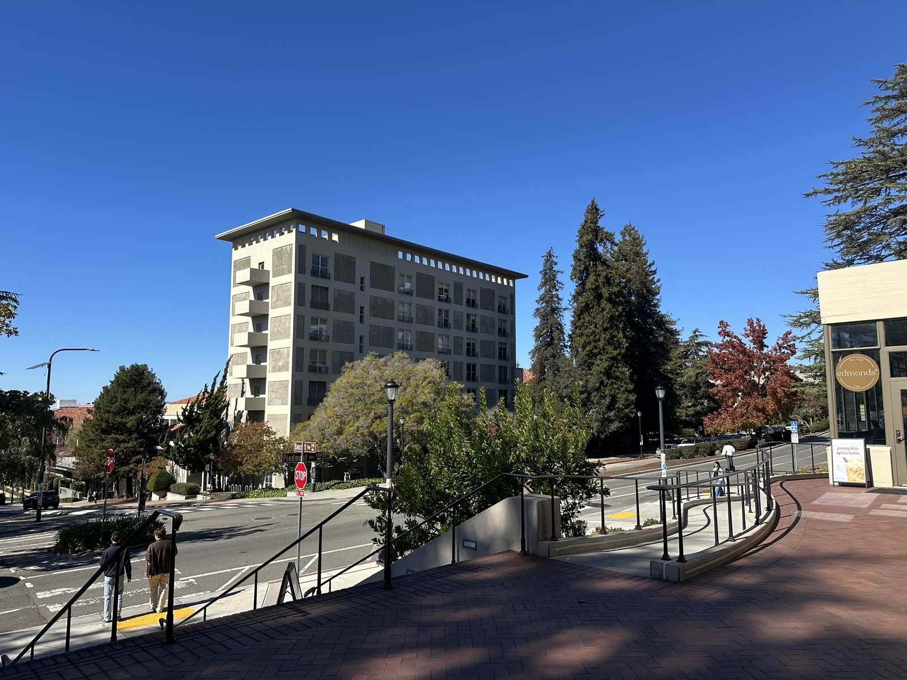
Project 04A · Fall 2026
Recovering projective transforms from manual point matches, inverse-warping images, and feather-blending them into panoramas.
A.1 · Shoot the pictures
I captured each set from a nearly fixed center of projection while rotating the camera. Architectural edges, windows, furniture, and other stable landmarks provide well-distributed matches across the overlaps.

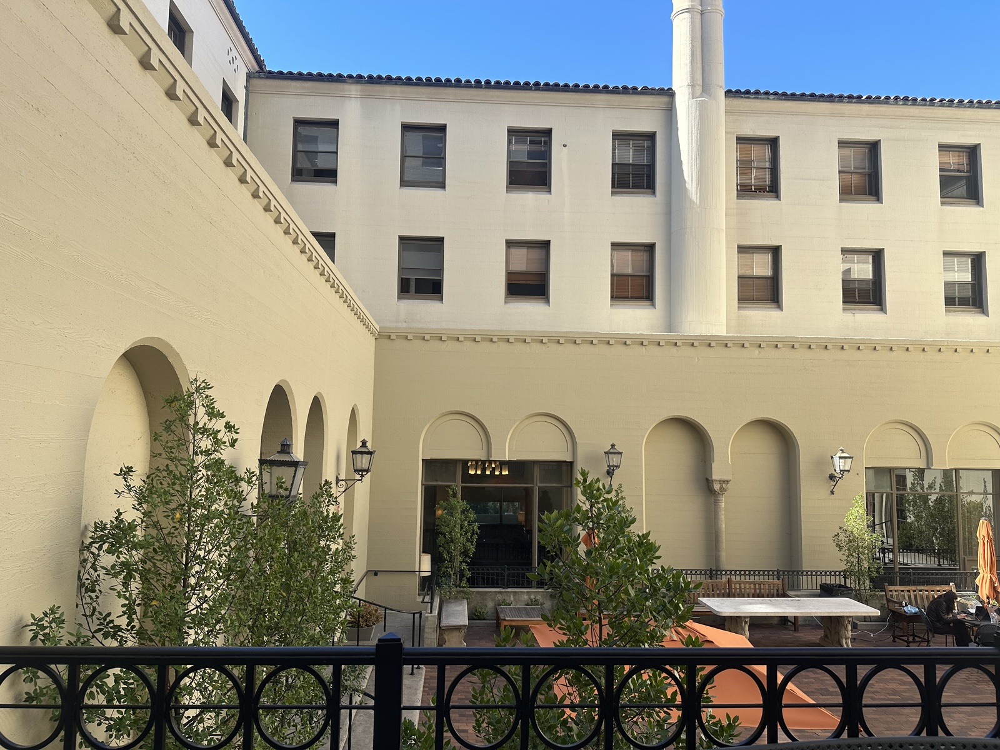

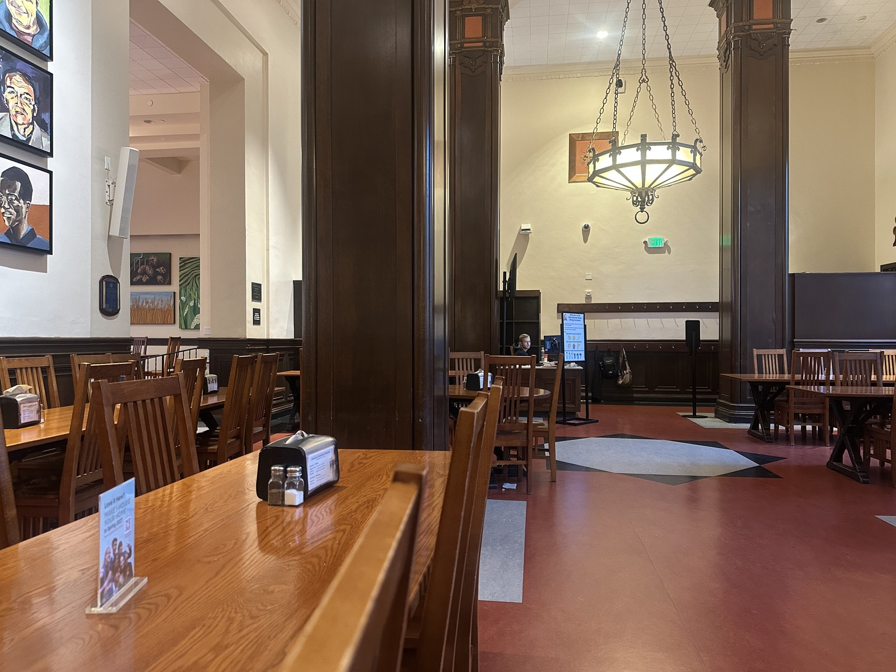

A.2 · Recover homographies
For each source-to-reference pair, I clicked ten corresponding points in the same order. Setting h33 = 1 leaves eight unknowns, so the resulting 20 equations form an overdetermined system solved with least squares.
One correspondence: (x, y) → (u, v)
Stacking the pair of rows from every match produces Ah = b. The final homography maps homogeneous source coordinates to reference coordinates: p′ = Hp.
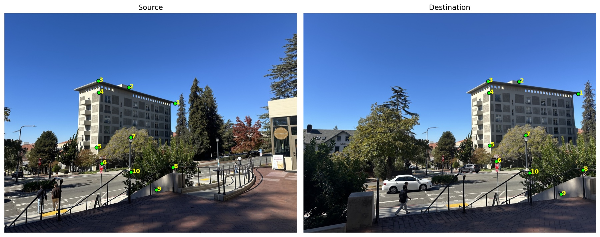
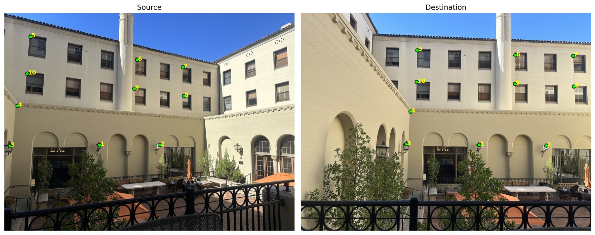

Set 1[[ 0.420058, 0.013759, 594.731595], [-0.247489, 0.756959, 147.331535], [-0.000344, -0.000038, 1.000000]]
Set 2[[ 0.522781, 0.025799, 538.037131], [-0.206299, 0.824614, 118.087725], [-0.000295, -0.000005, 1.000000]]
Set 3[[ 1.862440, -0.072445, -1096.087214], [ 0.344524, 1.501327, -363.248998], [ 0.000596, -0.000094, 1.000000]]
A.3 · Warp the images
For every output pixel, I apply H−1 to locate the corresponding source coordinate. This inverse formulation avoids holes in the output. Nearest-neighbor uses the closest source pixel, while bilinear interpolation blends its four surrounding pixels for smoother edges.
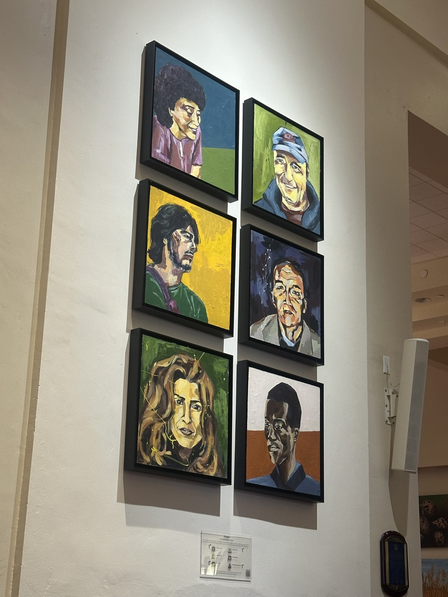
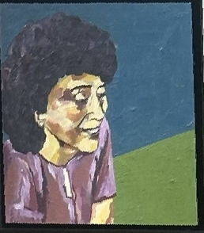
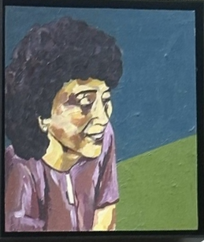

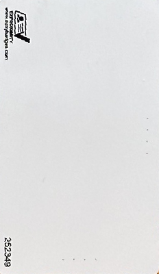
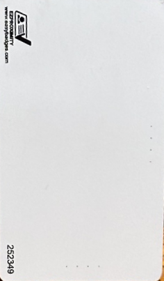
Interpolation comparison. Nearest-neighbor is the simpler and faster sampler, but it makes diagonal edges appear blockier. Bilinear interpolation costs four source reads per sample and produces smoother transitions in both rectifications.
A.4 · Blend into mosaics
I transform each image corner to determine a shared output canvas, warp every source image into it, and use an edge-distance weight mask as alpha. At every overlap pixel, the output is the normalized weighted average of the valid warped colors, rather than one image overwriting the other.
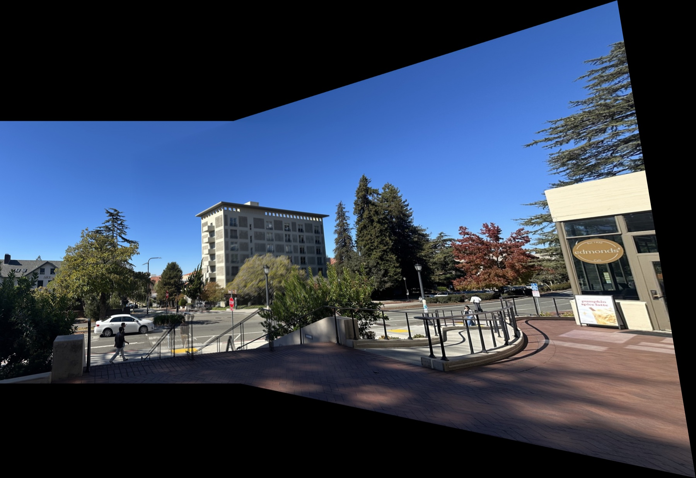


Limits of the model. The black regions are areas of the rectangular output canvas not covered by either warped photograph. Slight ghosting and perspective variation remain around close objects because a single planar homography cannot perfectly model scene depth or camera translation.
Takeaway
Well-spread landmarks made the estimated transformations stable; inverse warping filled every destination sample; and feathered weights softened the seams that simple overwrite compositing would create.